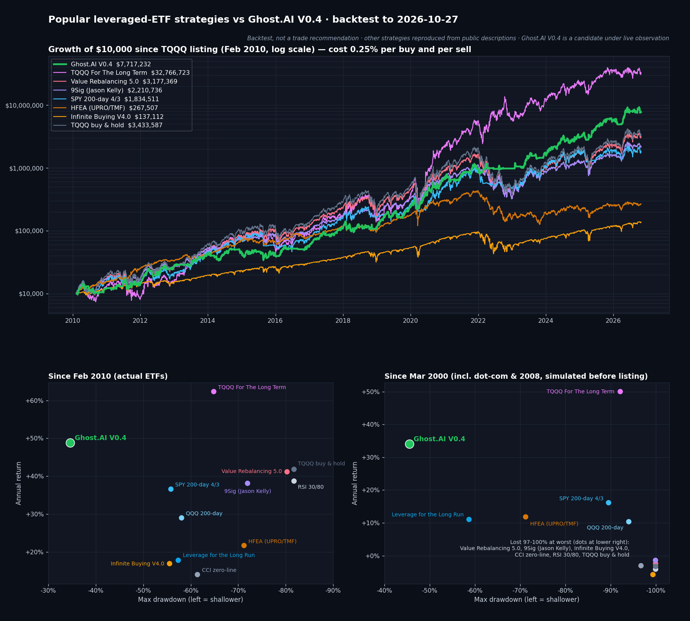

TQQQ 유명 매매법 10가지, Ghost.AI V0.4와 비교했습니다
· 상시 게시 · 매매법 비교
라오어 무한매수법·VR, 레딧의 200일선, 9Sig, HFEA, 「TQQQ For The Long Term」까지.
국내외에서 많이 따라 하는 레버리지 ETF 매매법 10가지를 같은 조건으로 재현해 Ghost.AI V0.4와 2000년부터 비교했습니다.
결론 — Ghost.AI는 남들이 다 보는 지표가 아니라, 우리만의 고유 신호로 움직입니다
- Ghost.AI V0.4는 낙폭 대비 수익(칼마 비율)에서 2000년 이후와 2010년 이후 모두 1위였습니다.
- 2010년 이후 연평균 +48.9%, 최대 낙폭 −34.6% 입니다. 비교한 10가지 중 최대 낙폭이 가장 작은 매매법은 −55% 였습니다.
- 닷컴 붕괴와 금융위기가 들어간 2000년 이후로 보면 연평균 +34.1%, 최대 낙폭 −45.5% 입니다. 다른 매매법은 대부분 이 기간에 원금의 90~100%를 잃었습니다.
- 연평균 수익만 보면 「TQQQ For The Long Term」이 더 높았습니다(2010년 이후 +62.3%).
- 다만 최대 낙폭이 −65%(2000년 이후 −92%)였고, 하락장 수익의 대부분이 3배 인버스 ETF에서 나왔습니다. (위험합니다)
- 차이를 만든 것은 신호의 출처입니다.
- 다른 매매법은 모두 누구나 볼 수 있는 가격 정보로 움직입니다.
- 이동평균선, RSI·CCI 같은 보조지표가 그렇습니다. 같은 차트를 보는 수많은 사람이 같은 날 같은 판단을 내립니다.
- Ghost.AI V0.4는 자체 개발한 딥러닝 모델(DeepGhost)이 매일 계산하는 신호를 중심으로 움직입니다.
- 이 신호는 다른 어디에서도 구할 수 없고, 차트의 선 하나로는 흉내 낼 수 없습니다.
- 그 결과가 가장 크게 드러난 곳이 긴 하락장입니다.
닷컴 붕괴(2000~02)와 금융위기(2007~09)에 V0.4는 오히려 자산을 늘렸고
2022년 약세장은 −15.8%로 버텼습니다.
같은 약세장에서 3배 인버스로 넘어간 TQQQ For The Long Term(+2%)을 빼면, 다른 매매법은 −43 ~ −82%였습니다.
비교한 매매법
| 매매법 | 어떻게 운용하나 | 어디서 나왔나 |
|---|---|---|
| 무한매수법 V4.0 | 원금을 40번으로 나눠 매일 조금씩 사고, 평단보다 일정 수준 오르면 팔아 처음부터 다시 시작 | 라오어, 책 「라오어의 미국주식 무한매수법」(2021)·네이버 카페 |
| VR(밸류 리밸런싱) 5.0 | 2주마다 목표 평가금을 조금씩 올리고, 평가금이 목표의 ±15% 밖으로 나가면 사고팔아 되돌림 | 라오어, 책 「라오어의 미국주식 밸류 리밸런싱」 |
| QQQ 200일선 | 나스닥 100(QQQ)이 200일 이동평균 위면 TQQQ 보유, 아래면 현금 | 이동평균 추세 추종의 기본형, 레딧 r/LETFs |
| SPY 200일선 4/3 | S&P 500이 200일선보다 4% 위로 오르면 TQQQ, 3% 아래로 내리면 팔고 QQQ로 천천히 분할 매수 | 레딧 r/LETFs 인기 글 |
| Leverage for the Long Run | S&P 500이 200일선 위면 S&P 500 3배(UPRO), 아래면 현금 | Gayed·Bilello 논문(2016, 미국 기술분석가협회 Dow Award) |
| 9Sig | TQQQ 60 : 채권 40으로 시작해, 분기마다 TQQQ 몫이 9% 성장 목표보다 많으면 팔고 적으면 채움 | 미국 투자 작가 Jason Kelly |
| HFEA | S&P 500 3배(UPRO) 55% + 미국 장기국채 3배(TMF) 45%, 분기마다 비율 재조정 | 미국 투자 커뮤니티 Bogleheads (2019) |
| TQQQ For The Long Term | 평소엔 TQQQ, 단기 과열이면 변동성 ETF(UVXY), 약세장에선 3배 인버스(SQQQ)나 채권으로 매일 바꿔 탐 | 레딧 r/LETFs, 자동매매 플랫폼 Composer |
| CCI 0선 | 나스닥 100의 CCI 지표가 0을 위로 넘으면 사고 아래로 내려가면 팜 | 국내 보조지표 매매 해설 |
| RSI 30/80 | 나스닥 100의 RSI가 30을 위로 넘으면 사고 80에서 꺾이면 팜 | 국내 SNS TQQQ 지표 매매 글 |
각 매매법은 공개된 원문·해설을 바탕으로 재현했으며, 원래 규칙·실제 성과와 다를 수 있습니다.
비교 기준 — 모두 같은 조건
- 같은 원금을 한 번 넣고, 매수·매도 때마다 거래 금액의 0.25%를 비용으로 뺐습니다. 세금은 빼고, 현금 구간 수익은 0으로 계산했습니다.
- 모든 매매법을 장 마감 가격으로 판단하고 다음 날 시가에 체결했습니다. 무한매수법과 VR은 원래 규칙대로 그날 종가에 체결했습니다.
- 기간은 2000년 3월 ~ 2026년 10월 27일입니다. 각 ETF가 상장하기 전 구간은 기초 지수 하루 등락의 3배에서 보수·차입 비용을 뺀 가상 가격을 썼습니다. 2010년 이후는 실제 ETF 가격입니다.
백테스트 결과

위: 2010년 2월에 1만 달러로 시작했을 때의 자산(로그 눈금, 비용 반영). 아래: 연평균 수익률(세로)과 최대 낙폭(가로) — 왼쪽 위로 갈수록 덜 잃으면서 많이 번 전략입니다. 왼쪽은 2010년 이후, 오른쪽은 2000년 이후.
총정리 — 2010년 이후 / 2000년 이후
| 매매법 | 2010~ 연평균 | 2010~ 최대 낙폭 | 2000~ 연평균 | 2000~ 최대 낙폭 | 칼마 (2010~) |
|---|---|---|---|---|---|
| Ghost.AI V0.4 | +48.9% | −34.6% | +34.1% | −45.5% | 1.41 |
| TQQQ For The Long Term | +62.3% | −64.9% | +50.0% | −92.2% | 0.96 |
| SPY 200일선 4/3 | +36.6% | −55.8% | +16.2% | −89.6% | 0.66 |
| 9Sig | +38.1% | −72.0% | −1.4% | −99.9% | 0.53 |
| VR 5.0 | +41.2% | −80.3% | −2.4% | −100% | 0.51 |
| QQQ 200일선 | +29.0% | −58.1% | +10.4% | −94.0% | 0.50 |
| RSI 30/80 | +38.7% | −81.8% | −4.1% | −100% | 0.47 |
| HFEA | +21.7% | −71.2% | +11.8% | −71.2% | 0.31 |
| Leverage for the Long Run | +17.8% | −57.4% | +11.0% | −58.7% | 0.31 |
| 무한매수법 V4.0 | +17.0% | −55.5% | −5.8% | −99.4% | 0.31 |
| CCI 0선 | +14.1% | −61.4% | −3.1% | −96.7% | 0.23 |
| TQQQ 그냥 보유 | +41.8% | −81.8% | −3.3% | −100% | 0.51 |
칼마 비율 = 연평균 수익률 ÷ 최대 낙폭 (클수록 낙폭 대비 수익이 큼). 2010~ 은 TQQQ 상장일(2010-02-11) 새 출발, 2000~ 은 2000-03-13 출발. 2010년 1만 달러 → V0.4 약 772만 달러, TQQQ 보유 약 343만 달러.
구간별 — 연평균 / 최대 낙폭
| 매매법 | 2000~2009 | 2010~2018 | 2019~ | 2025~ |
|---|---|---|---|---|
| Ghost.AI V0.4 | +12.2% / −45.5% | +31.2% / −34.6% | +71.8% / −30.5% | +67.6% / −23.4% |
| TQQQ For The Long Term | +34.4% / −92.2% | +35.1% / −63.1% | +99.9% / −64.9% | +27.2% / −39.5% |
| VR 5.0 | −47.4% / −100% | +39.3% / −55.0% | +43.3% / −80.3% | +42.6% / −55.3% |
| 9Sig | −44.1% / −99.9% | +36.1% / −35.1% | +40.5% / −72.0% | +40.0% / −42.4% |
| SPY 200일선 4/3 | −10.0% / −89.6% | +37.3% / −52.6% | +35.8% / −55.8% | +4.7% / −36.1% |
| HFEA | −2.4% / −67.8% | +29.6% / −26.5% | +13.4% / −71.2% | +12.6% / −31.4% |
| 무한매수법 V4.0 | −34.9% / −99.4% | +15.8% / −32.5% | +18.3% / −55.5% | +20.3% / −33.9% |
| TQQQ 그냥 보유 | −48.6% / −100% | +41.9% / −58.1% | +41.8% / −81.8% | +37.9% / −57.0% |
연도별 수익률
| 연도 | V0.4 | TQQQ FTLT | VR 5.0 | 9Sig | SPY 4/3 | HFEA | 무한매수 | TQQQ 보유 |
|---|---|---|---|---|---|---|---|---|
| 2001 닷컴 붕괴 | +45% | +284% | −89% | −88% | −28% | −19% | −80% | −89% |
| 2008 금융위기 | +17% | +157% | −88% | −88% | −36% | −32% | −73% | −88% |
| 2011 횡보 | +15% | −36% | −2% | −1% | −2% | +63% | +18% | −8% |
| 2013 상승장 | +62% | +226% | +111% | +107% | +140% | +28% | +32% | +140% |
| 2015 횡보 | −7% | −35% | +22% | +17% | −22% | −4% | +15% | +17% |
| 2018 4분기 급락 | +4% | −13% | −16% | −6% | +8% | −14% | −1% | −20% |
| 2020 코로나 | +194% | +490% | +104% | +123% | +98% | +77% | +42% | +110% |
| 2022 약세장 | +3% | +8% | −78% | −69% | −49% | −64% | −46% | −79% |
| 2025 관세 충격 | +87% | +63% | +35% | +31% | +9% | +16% | +20% | +33% |
| 2026 (10/27까지) | +37% | −5% | +41% | +41% | 0% | +7% | +17% | +35% |
VR·9Sig·HFEA·무한매수법은 2010년 이후 해는 2010년 새 출발 기준입니다. 2000년에 시작하면 닷컴 붕괴 뒤 현금이 바닥나 TQQQ 보유와 거의 같아집니다.
큰 하락 구간 — TQQQ 고점에서 저점까지
| 사건 (기간) | V0.4 | TQQQ FTLT | VR 5.0 | 9Sig | SPY 4/3 | HFEA | 무한매수 | TQQQ 보유 |
|---|---|---|---|---|---|---|---|---|
| 닷컴 붕괴 (00.3~02.10) | +82% | +51% | −100% | −100% | −90% | −53% | −99% | −100% |
| 금융위기 (07.10~09.3) | +20% | +35% | −95% | −94% | −61% | −68% | −83% | −95% |
| 2011 신용등급 강등 (11.7~8) | −32% | −30% | −40% | −32% | −24% | −1% | −22% | −44% |
| 중국 쇼크 (15.7~16.2) | −15% | −42% | −40% | −30% | −47% | −4% | −20% | −45% |
| 2018 4분기 (18.8~12) | −15% | −63% | −55% | −35% | −33% | −24% | −32% | −58% |
| 코로나 (20.2~3) | −31% | −60% | −64% | −47% | −43% | −31% | −33% | −70% |
| 2022 약세장 (21.11~22.12) | −16% | +2% | −80% | −72% | −53% | −65% | −48% | −82% |
| 2025 관세 충격 (24.12~25.4) | −16% | −38% | −56% | −44% | −37% | −32% | −31% | −58% |
시사점
- 레버리지 ETF에서 수익을 가르는 것은 「큰 하락을 얼마나 피했느냐」였습니다.
TQQQ는 닷컴 붕괴와 금융위기에 −95~−100%를 맞았습니다. 그 구간을 그대로 들고 간 매매법(VR·9Sig·RSI·무한매수)은 26년 연평균이 마이너스가 됐습니다. - 정해진 비율로 사고파는 방법은 상승장에서는 TQQQ 보유와 비슷하지만, 긴 하락장에서는 현금이 바닥납니다.
VR·9Sig는 2010년 이후 연평균 38~41%로 TQQQ 보유(41.8%)와 비슷했습니다. 하지만 2022년에는 −69~−78%였습니다. - 200일선 계열은 낙폭을 줄여 주지만, 늦게 팔고 늦게 사는 대가가 있습니다.
2022년 −49%(SPY 4/3)였고, 2025년처럼 급락 뒤 빨리 반등하는 해에는 휩쏘로 수익을 많이 놓쳤습니다(2025년 +9%). - 주식과 채권을 섞는 HFEA는 둘이 반대로 움직일 때만 작동했습니다.
2022년처럼 금리가 오르며 함께 떨어진 해에는 −64%였습니다. - TQQQ For The Long Term의 높은 수익은 하락장의 3배 인버스 ETF에 기대고 있습니다.
인버스·변동성 ETF를 빼고 계산하면 2010년 이후 연평균은 +43.5%로 내려갑니다. 그래도 최대 낙폭은 −58%입니다. - Ghost.AI V0.4는 상승장 수익을 일부 내주는 대신, 긴 하락장과 급락을 가장 적은 손실로 지나갔습니다.
최악의 해가 2000년 이후 −14%, 2010년 이후 −7%였습니다.
다른 매매법이 앞선 곳
- 연평균 수익은 TQQQ For The Long Term이 더 높았습니다(2010년 이후 +62.3% vs +48.9%). 2013·2020년처럼 크게 오른 해에도 훨씬 많이 벌었습니다.
- 2010~2018년만 보면 TQQQ 보유(+41.9%)·VR·SPY 4/3·9Sig의 연평균이 V0.4(+31.2%)보다 높았습니다. 같은 기간 최대 낙폭은 HFEA가 −26.5%로 가장 얕았습니다.
- 횡보장에서는 리밸런싱·분할 매수 방법이 이겼습니다. 2011년 HFEA +63%·무한매수 +18%, 2015년 VR +22%·9Sig +17%였고, V0.4는 2015년 −7%였습니다.
- 짧고 깊은 급락은 HFEA가 더 잘 버텼습니다. 2011년 신용등급 강등 때 HFEA −1%·V0.4 −32%였고, 2015~16년 중국 쇼크 때 HFEA −4%·V0.4 −15%였습니다.
- 다른 매매법은 규칙이 공개돼 있어 누구나 직접 따라 할 수 있습니다. 200일선·9Sig·HFEA·VR은 1년에 몇 번 안팎만 매매하면 됩니다. Ghost.AI V0.4는 모델 신호를 따라 1년에 30~35번 정도 비중을 바꿉니다.
Commnets
- 다른 매매법은 공개된 원문·해설을 바탕으로 재현했습니다. 주식을 정수 단위로 사는 점과 장중 지정가 체결은 반영하지 않았습니다. 9Sig·VR·무한매수법은 원래 매달 돈을 넣는 적립식이나 원금 일부 운용을 함께 쓰는 경우가 많은데, 비교를 위해 원금을 한 번만 넣는 방식으로 계산했습니다. TQQQ For The Long Term은 공개된 여러 변형 가운데 원형을 썼고, 일부 ETF는 비슷한 ETF로 바꿨습니다.
- Ghost.AI V0.4는 다음 버전 후보입니다. 2026년 10월 20일부터 실제 매매 없이 신호를 기록하며 관찰하고 있습니다. 지금 운영 전략과 실계좌는 V0.3을 따릅니다.
참고: 라오어, 「라오어의 미국주식 무한매수법」(2021)·「라오어의 미국주식 밸류 리밸런싱」 · 무한매수법 V4.0·VR 5.0 해설 — quantstack · Gayed & Bilello, 「Leverage for the Long Run」(2016) · Jason Kelly, 9Sig — bestfolio 정리 · HEDGEFUNDIE's Excellent Adventure — Bogleheads · TQQQ For The Long Term — Composer
백테스트만 믿지 마시고, 실시간 기록을 직접 확인하세요. Ghost.AI는 전략의 신호를 매일 장 마감 후 공개하고, 지난 신호는 고치거나 지우지 않고 그대로 쌓아 둡니다. → 오늘의 시그널 · 백테스트 성과 · 베타 회원 가입